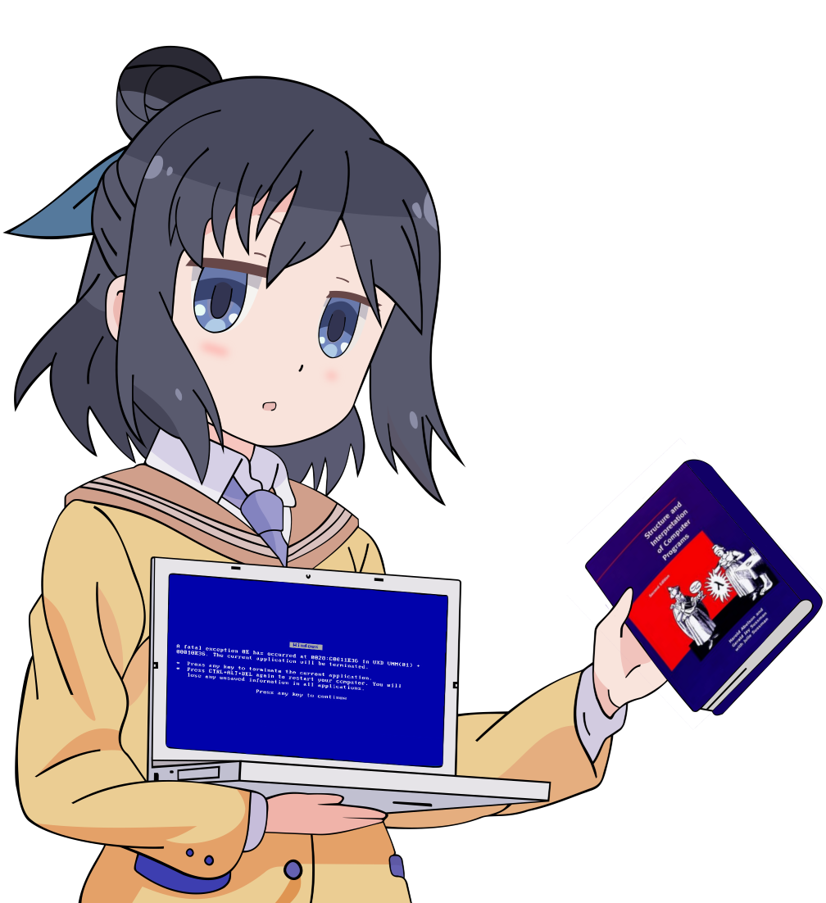

eLi
Ask about Racket or programming languages. I will look through the indexed readings and point you to relevant pages. If I cannot find enough evidence, I will say so.
Searching the readings and preparing an answer…
Ask about Racket or programming languages. I will look through the indexed readings and point you to relevant pages. If I cannot find enough evidence, I will say so.
